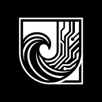

Co-founder & President / Technical Lead
- Co-founded Imperial's AUV society and set up the non-technical side — constitution, Union risk assessments and the funding pipeline — alongside the vehicle work.
- Lead the structural design of a modular inline swarm AUV for seabed mapping: a continuous four-rod external spine carries all loads, 3D-printed split-clamp modules attach to it, and the acrylic pressure canister is kept out of the load path entirely. Target depth 10–50 m.
- Drafted the society's 2026 ADF funding bid (~£7.4k) [awarded?] and secured sponsorship from RS (2026).
- Setting the 2026/27 development tracks — vehicle build, simulation (ROS 2 / Gazebo) and mission software — so members at different levels can contribute from day one.